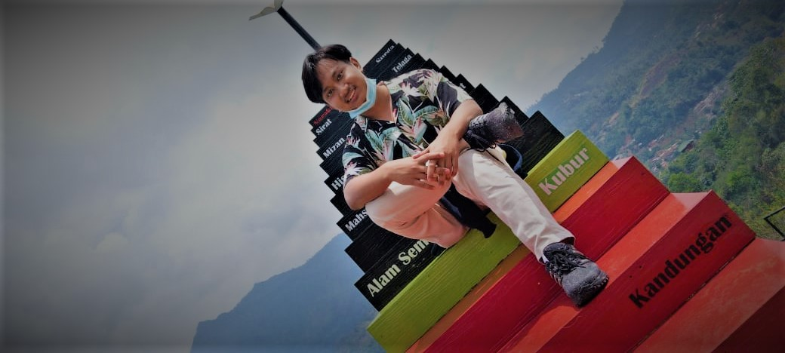

Wildan Khotibul Umam Nasrulloh
Full Stack Web Developer
- About Me
- Saya seorang mahasiswa yang bersemangat dan berkomitmen untuk mengejar studi independen.
Memiliki kemampuan belajar mandiri yang baik, inisiatif tinggi,
dan dedikasi yang kuat untuk mencapai tujuan akademik.
Berpengalaman dalam mengatur jadwal sendiri dan mampu bekerja secara mandiri.
Memiliki keterampilan komunikasi dan pemecahan masalah yang baik.
Summary
Saya adalah seorang mahasiswa pengembang web yang dengan pengalaman dalam membangun situs web modern
dan aplikasi web interaktif. Saya memiliki pemahaman yang kuat tentang HTML, CSS, dan JavaScript
serta pengalaman dalam menggunakan kerangka kerja seperti React dan Angular.
Kemampuan saya mencakup desain responsif, optimisasi kinerja, dan integrasi API.
Saya selalu bersemangat untuk belajar dan menjelajahi teknologi baru dalam dunia pengembangan web
untuk memberikan solusi web yang inovatif dan berkualitas tinggi kepada klien.
Work Experience
Membuat beberapa web
Sekretaris
Editor
Photographer
SKILLS
- HTML
- CSS
- Java
- PHP
- MySql
- Microsoft Word
- Microsoft excel
- Microsoft PowerPoint
Penghargaan/Sertifikasi (Opsional)
- Juara 1 Ceramah Di Yayasan Al Badru
- Penghargaan Santri Ter Ramah
- Juara 4 Membuat Website se angkatan
Pendidikan
- SDN Mekarbakti 4 Bungbulang - Garut
- SMPN 4 Bungbulang - Garut
- MA Miftahussaadah - Cimahi
- S1 Stmik Mardira Indonesia | 2020-Sekarang
- Sedang Mengikuti Magang Studi Independen Bersertifikat di VOCASIA